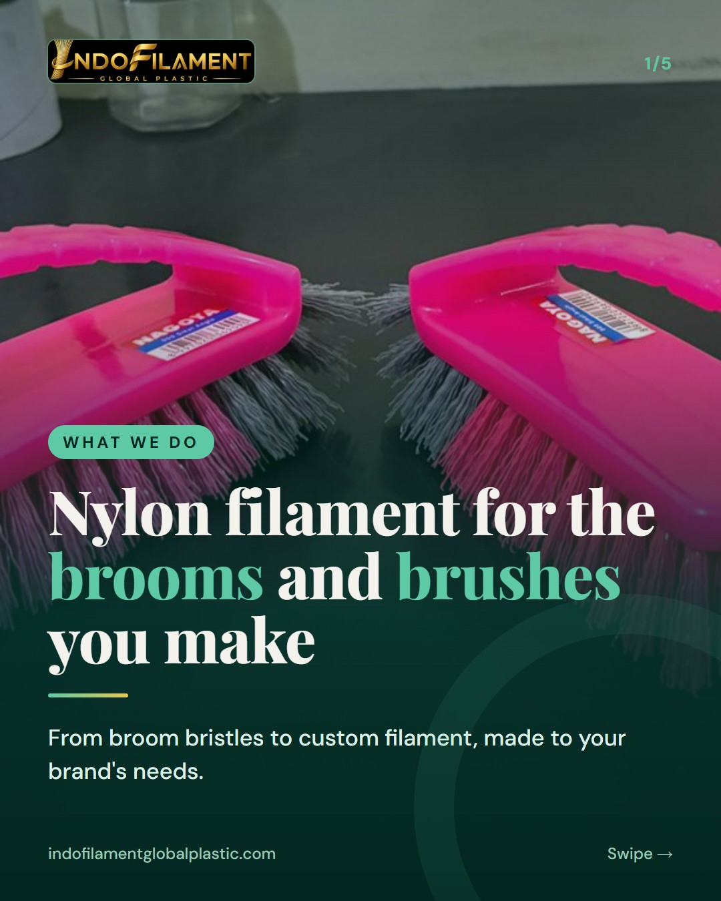
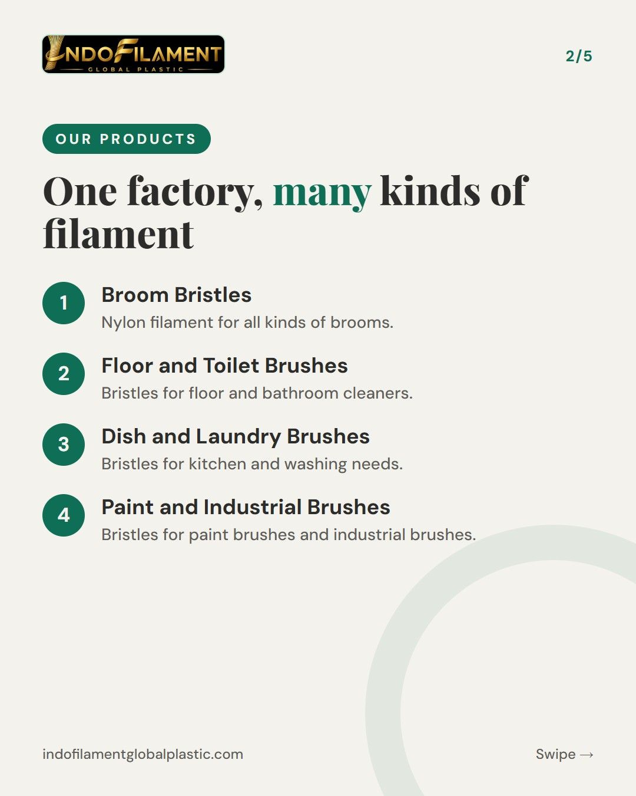
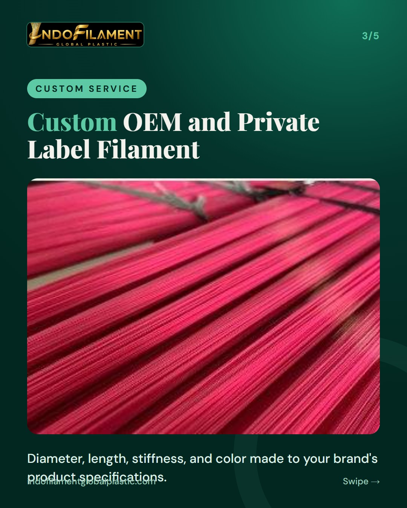
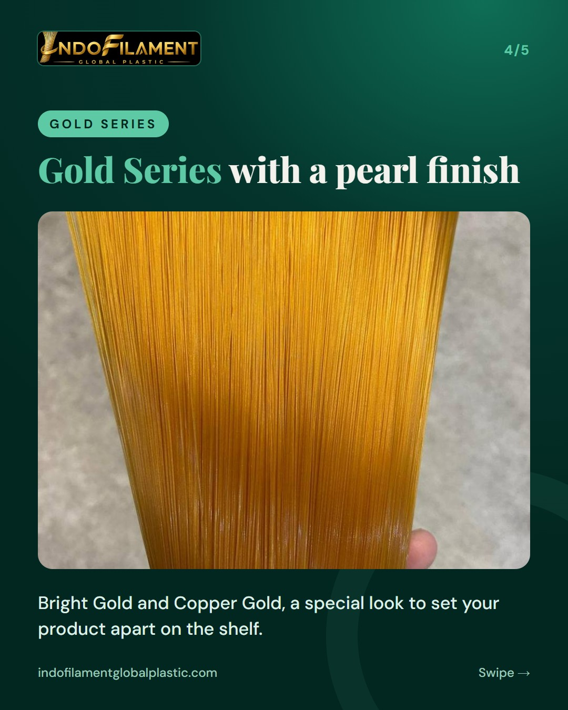
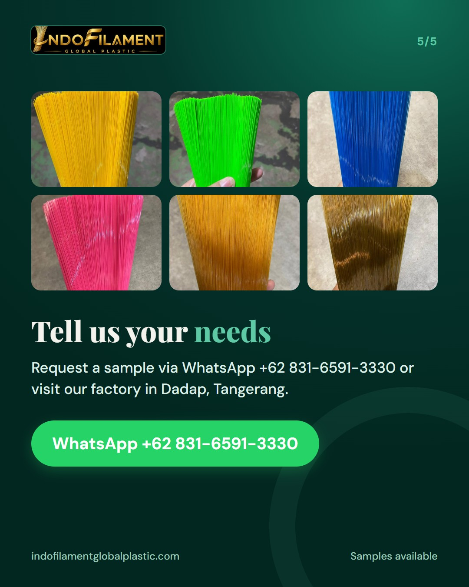

Intro series 3 of 3 - What We Do: our products and services, with an invitation to message us on WhatsApp





What exactly do we do at Indofilament? 🏭 This is part three of our account introduction series. After getting to know us, it's time to see what we produce in Tangerang. We make nylon filament for broom and brush bristles: floor brushes, toilet brushes, dish and kitchen brushes, laundry brushes, paint brushes, and industrial brushes. For brands that want to stand out, custom OEM and private label filament is available, along with our Gold Series (Bright Gold and Copper Gold) with a pearl finish. Color, diameter, length, and stiffness can be adjusted to your product. The raw material is recycled plastic, so it is more eco-friendly. ♻️ Have a specific need? Tell us. Request a sample via WhatsApp +62 831-6591-3330 or DM, and our factory is open for visits too. #broomfilament #brushfilament #nylonfilament #madeinindonesia #privatelabel #OEM #broommanufacturer #brushmanufacturer #Tangerang #indofilament